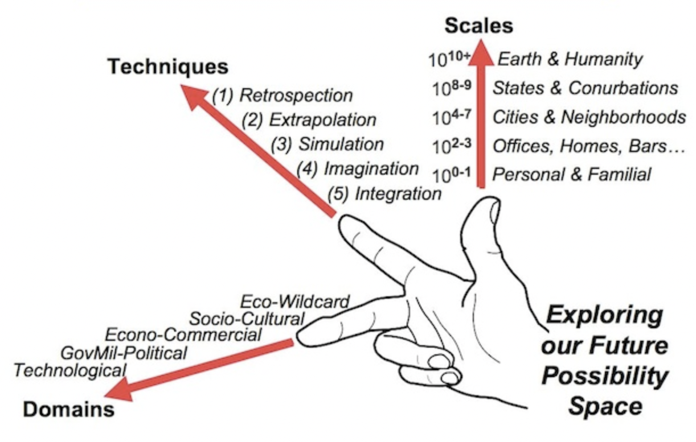

About the SciFi Library
The Media Lab is an incredibly dynamic place. With the coming and going of students, research groups and eras, it can be hard to remember all the amazing things we have done for the last 30 years.
The SciFi Library (scifilib), located in E15-384, is a space for the community to learn about the past, and get inspired to create the future. Scaffolded by a generously donated collection of hundreds of science fiction books, its archives span many divergent possibilities for what the future might hold. Stop by, hang out, and check out a book!
scifilib is aligned with SciFab, an ongoing Media Lab class explores the use of Science Fiction to inspire and accelerate real world innovation. Here is a digital archive of works from these classes.
For questions or to get involved, get in touch with scifilib@mit.edu